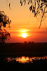
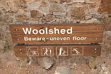
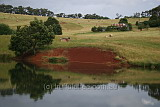
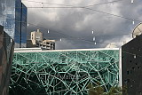
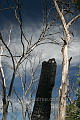
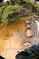

23/3/2006
You are here: Home > Travelogues > Nerd's Eye View > 23/3/2006The Wrap Up
Hi everyone. Remember me? It's been a while...
I've been putting off writing this last update, in the hope that I would be able to do it from a (rented) house of my very own, but it's turned out to be a little more difficult to find a good place than we first thought.
This will be the last instalment of Nerd's Eye View. It'll be a bit long (ok, it's turned out to be way long), but if you've been saving yourself up to finally read one in full (as I know many of you haven't before), this is your chance :).
So, time has marched on.... and it's been nearly two months since the last post; talk about slack!
Compared to the prior 9 months, these last two have been relatively unexciting, and the pace of life (in terms of how full the days are) has definitely backed off a notch or 10.
So, the executive summary: We're staying at Jana's cousin's place while we look for a place to rent. Sylvie has a 3-and-a-lot year old called Ashra, who is good entertainment (most of the time :)).
Apart from hanging around here with a small child climbing all over me, and looking at rental houses, we've been pretty relaxed. I've gone back to training, and my fitness is slowly being clawed back.
Other highlights from the past month:
- Going to the One-day Cricket Final (a relatively unexciting game, but I did get a chance to take a few snaps before nice man told me that my camera was too expensive to be used there (it makes the corporate copyright holders nervous, you see).
- Heading to QLD Raceway for a day, to watch Rhys (friend and fellow photo-nerd) do some quick laps, and take pictures of his shiny new MX-5. It was a good excuse to practice pan shots on rapidly moving objects, as well as to get more sunburnt than I did on my entire trip.
- Various other random photo-taking events, some just for fun with Rhys (one with a cool 10-22mm lens on loan - now of course I want one!), some more Taekwondo events, a night out seeing a friend's friend's band debut, and various snaps of a certain 3-year-old showing off.
- Rebuilding my big computer that had a conniption last August. This involves lots of data shuffling and is as exciting as it sounds.
- Fighting with Australia Post, who have lost the parcel my Dad sent up from Sydney, containing the archive discs with my trip's camera RAW files (sort of like digital negatives). They managed to lose a registered parcel, and took a month before even properly looking. Then they only started to do stuff because I got seriously shirty with them. Needless to say, Australia Post are not my favourite people right at the moment, and I would urge anyone thinking of sending anything valuable not to use them.
And that's it. Adjusting back into so-called normal life has been a pretty gradual process, and given the difficulty we've had in finding a decent place to live it's made for a terrific anticlimax. But that's ok, post travelling blues are to be expected, and I'm fairly malleable when it comes to life at the moment.
In the meantime, Nerd's Eye View is long overdue for a wrap-up. So, in no particular order, some random thoughts and statistics on the trip:
Time on the road:
9 months.Kilometres driven:
About 35000. This is quite an achievement considering that doing a straight lap of the country on the main highway is around about 10000kms, give or take a couple of thousand. Just goes to show that all the little detours add up! This figure also means that I burned about 3500 litres of petrol (and tens of litres of oil, before my engine change). When I met up with Jana, we started keeping track of expenses, and since then we averaged $10 each and every day on petrol.Kilometres ridden:
Not sure, due to the whole bike-stealing incident messing up my statistics. I think the figure is around 900-1100kms. This sounds impressive, but is actually really rather pathetic given it's over 9 months. :) Mind you - it's still a couple of tanks of fuel saved!Photos taken:
Nearly 17000. The figures leapt when I bought the zoom lens and started using continuous shooting mode a lot more. :)Photos actually kept:
About 8300. Many of these are decidedly average, or too stupid for publication. Only about 3800 actually made it onto the website, but of course I kept the rest anyway. We all have to horde something in life, and I choose data.Emails sent:
34, including this one.Words written:
44000. If you've actually read them all, award yourself an Iced Vo-vo (and an appointment with the optometrist). :) There's also another 20000 words in my diary, but thankfully that claptrap that will never see the light of day. So it's little wonder that the most used keys on my laptop have developed little shiny patches.Animals killed:
No doubt tens of thousands, if you include insects. Invertebrates aside though, I hit about 6 birds and 2 bobtail lizards. Almost all of these were pretty much unavoidable, barring one or two when I really should have been paying more attention.Thankfully, I never hit anything larger, mostly due to the simple strategy of avoiding driving at dusk/dawn/night whenever possible, and doing sensible speeds in higher risk areas. It just goes to show that killing animals on the road is almost completely avoidable (unless you are driving a road train, which is why I could never do that for a job), so there's really very little excuse for the disgustingly high amount of roadkill in this country.
It really pisses me off, especially in national parks, to see dead animals that someone hasn't even bothered to move off the road. Apart from the complete lack of respect that it entails, it endangers other animals that might come onto the road to scavenge.
Anyway, on to more cheerful topics. :)
Longest time without a shower:
About three days, when we were out in the Pilbara, however, we did swim in gorgeous gorges almost every day, so it doesn't really count. Similarly, when we were exploring Ningaloo Reef, we didn't shower (there weren't any in the park), but we were snorkelling almost every day. This was in fact worse though, as you end up covered in itchy salt and your hair gets quite foul.Most amusing road sign:
Probably this one. I love the fact that there is no petrol available for a greater distance than the span of many, if not most, European countries.
Items "used up", lost, broken, stolen or generally kaput:
- 1 engine. The less said about that the better.
- 3 tyres. Two died a horrible delamination death, and the third had the tread completely worn off.
- 1 bike (grrr). Several inner tubes.
- 1 t-shirt, several socks.
- 2 pairs of thongs (flip-flops for all you chuckling geezers).
- 1 hat (upgraded).
- 1 entire tin of lip balm
- 1 capo (forgot to get it back at the end of the night, curse that alcohol!).
- ...and a couple of sets of guitar strings.
Favourite place:
This is probably the most common question I get asked, before people lose interest and start talking about the weather, sport, themselves and so on (a phenomenon that most travellers will be familiar with - it's not just that I'm a boring speaker :)). To be honest, I don't have any one place in mind, although I did love the Wolfe Creek crater somewhat disproportionately (and I still haven't seen the movie).Overall, I'd have to say that anywhere more remote was nice; the top end, NT and WA. In particular the Kimberley and the Pilbara are pretty damn awesome. They're also the furthest places to get to from the east coast. Anyway, it's a totally different country when you get up north, and away from the east coast. It makes you appreciate the ridiculous size of this country too.
And whilst on the subject, some random thoughts on the various Australian states and territories, in the order that I visited them, plus some of my favourite pictures. In case you wonder at my bizarre selections, these pics are not necessarily anything to do with the places; they're just some of my personal favs.
Queensland.
Redneck capital of Australia (frighteningly so in places. Half this state still thinks it lives in the 60s. This is not a good thing). Gorgeous rainforest, beaches to die for. Sunshine, amazing snorkelling and diving. Serious indigenous drinking problems. Really lousy mobile coverage away from the east coast. Pleasant grey nomads. Backpackers galore, some cool travellers, but also many useless partying 18 year olds travelling on mummy and daddy's money. Shoddy roads.


The Northern Territory.
Empty. Flat. Amazing. Empty (ok, not really, just devoid of people). Far less serious alcohol issues, however plenty of issues remain nonetheless. Laid back, down to earth. Better roads, but less of them.
|
The Devil's Marbles at dawn |
 Mindil Beach in Darwin turns on a great sunset |
 As does Kakadu :) |
 Magpie Geese. 400,000 of them once destroyed a rice crop in the Kimberley |
Western Australia.
Enormous. Ancient. Remote. Old fashioned at times, but not redneckingly so (with the possible exception of certain southern areas). The indigenous people living outside the cities seem to have their shit together much more so than in other states. Northern WA is another world altogether. It's a serious must-see if you haven't already been. Amazing coastline all the way from the top to the bottom. The bluest water I've ever seen - great diving too although a little chilly at times! There is far, far more I could say about WA, it's such an enormous and diverse place. The best idea I think is to re-read the appropriate emails. :)


South Australia.
Disappointing. Large and largely empty. Environmental disaster area in places. Somewhat overrated (barring the Flinders ranges, and a few other spots which were fantastic). Adelaide is pretty, but for some reason I didn't take much of a shine to it. There is also a lot of amazing coastline, more of which warrants exploration one day.
|
 I love the variety of perils depicted on this warning sign |
Sap oozes from a trimmed fallen tree in Mount Remarkable National Park |
Victoria.
Mad Max country roads. Greenery. More fantastic coastline. Culture. I didn't really get to see a lot of Vic - I'm sure I'll return one day and cover it properly. Melbourne is great of course; and the Dandenong Ranges and Grampians were also quite lovely.
 Koala Claws |
 Lovely mounted butterflies in the Melbourne Museum |
 Penelope's back yard in The Dandenongs |
 Visual confusion in Melbourne |
Tasmania.
Beautiful and tragic. Total environmental disaster area in many places, particularly the west. Second most redneck state, bowing only to Queensland. Cold. Mossy and damp, in a pleasing way. Quite European in some way, although still definitely Australian. Lovely waterfalls and rainforest.
|
Climbing Henty Dunes |
Hogarth Falls |
Tasmania abounds in lovely fungi |
Waters mixing in a tidal outflow, Launceston |
Bass Strait on an amazingly calm day |
Australian Capital Territory (Canberra).
Boring as batshit, but kinda pretty from the air. Smells like liar when parliament is sitting. And my fantabulous sister lives there of course, so it's gotta have something going for it.
 Parliament House, Canberra. Nice building, pity about the occupants |
New South Wales.
Having gown up in Sydney, and done a lot of traipsing up and down the coast, I've still yet to explore the western part of NSW. Sydney itself is a gorgeous city, let down only by it's ridiculous cost of living and even more ridiculous traffic situation. Of course it's a must-see on any visit to Oz, but it's totally not the be-all and end-all it makes itself out to be.
|
 Fire and regeneration in the Snowy Mountains |
 Wentworth Falls through a fisheye. I gotta get me one sometime |
So that's that. Before I go, a few final words and comments in general.
First of all, if you have any sort of interest in the photos I've taken, and you've never actually been to my website, I really think you should go and waste some time there. The links above all take you to this email's corresponding page on my site, as attaching that many pictures wouldn't have been kind to Alan (whom I have to thank once again for letting me load test his mail server every week).
There are also maps of every step of the journey on the site, like the one attached. For anyone who's interested, you can download a saved set of these track points from here: http://www.truffulatree.com.au/files/nerdseyeview/NerdsEyeView.redirector.html, and load this file into Google Earth. For those of you who've never tried playing with Google Earth, it's very, very cool, and by downloading my track you can follow a bird's eye view of the nerd's eye view. You will waste hours zooming and tilting!
Over the next month or so I'll also be redoing a fair bit of my site - so do check back from time to time (assuming you give a hoot or two). Also, when you're there, please check out the ads. If they're relevant and you click, this gives me free money. I'm facing the prospect of having to find some sort of real job again at some stage, and every little bit of avoidance helps.
On this subject (grovelling and avoiding real work in general), I'm looking into expanding my tech writing, and trying to flog some of my photos (to departments of tourism, and image archives in general)... so, if anyone of you knows someone who might be interested, or has any suggestions, or just plain wants to give me money for nothing (we can all dream, can't we?), please feel free to get in touch with me, or pass on my details to whoever might care. I'm also available to do IT consulting of pretty much any kind (websites in particular). So share the love. It would mean a lot to me.
Apart from that, there's not much else to say. It's been nice to have everyone looking over my shoulder while I travel. Hopefully it's been nice for you too. If you're interested in staying in touch, all you have to do it click "reply". ;)
Until next time, adios!
All images in this gallery:


{kind=link}
{kind=link}
{kind=link}
{kind=link}
{kind=link}
{kind=link}
{kind=link}
{kind=link}
{kind=link}
{kind=link}
{kind=link}
{kind=link}
{kind=link}
{kind=link}
{kind=link}
{kind=link}
{kind=link}
{kind=link}
{kind=link}
{kind=link}
{kind=link}
{kind=link}
{kind=link}
{kind=link}
{kind=link}
{kind=link}
{kind=link}
{kind=link}
{kind=link}
{kind=link}
{kind=link}
{kind=link}
{kind=link}
{kind=link}
{kind=link}
{kind=link}
{kind=link}
{kind=link}
{kind=link}
{kind=link}
{kind=link}
{kind=link}
{kind=link}
{kind=link}
{kind=link}
{kind=link}
{kind=link}
{kind=link}
{kind=link}
{kind=link}
{kind=link}
{kind=link}
{kind=link}
{kind=link}
{kind=link}
{kind=link}
{kind=link}
{kind=link}
{kind=link}
{kind=link}
{kind=link}
{kind=link}
{kind=link}
{kind=link}
{kind=link}
{kind=link}